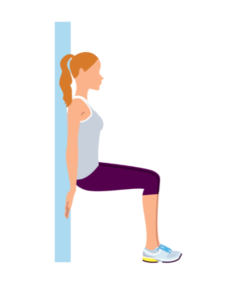
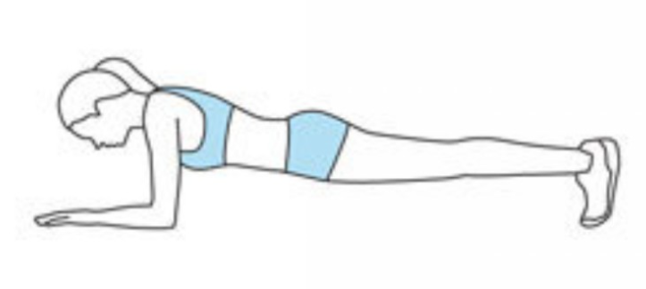

For your Health
Exercise
바쁜 일상에서 운동에 많은 시간을 들이기는 힘들지만, 하루 일과 중 10-30분씩 정도 꾸준히 운동하는 것이 좋습니다.
Thigh + Buttocks : Wall Sit

Wall Sit 자세
- 어깨너비로 다리를 벌린다.
- 허리를 벽에 붙이고 상체를 바르게 세운다.
- 양손으로 벽을 짚는다.
- 천천히 허리를 내리면서 무릎을 90도로 만든다.
- 두 팔을 앞으로 뻗는다.
- 10초 유지 후 다시 양손으로 벽을 짚는다.
- 천천히 허리를 들어올린다.
Core + Full body : Plank

플랭크 자세
- 엎드려서 양 팔꿈치를 90도로 굽히고 어깨너비를 벌려 상체를 편안하게 받친다.
- 왼쪽 아래 팔과 발끝으로만 체중을 지지하면서 허리를 C자 곡선을 유지시킨 채 몸통을 들어올린다.
- 10초 버틴 후 1번 자세로 돌아가며 5세트 반복한다.